Transformation du processus de préparation fiscale grâce à l’intelligence artificielle
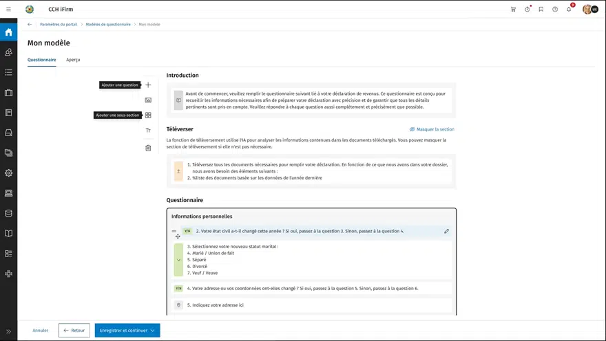
Contexte
Les professionnels de la fiscalité gèrent un processus complexe de collecte d’informations, de validation de documents et de saisie de données. Plusieurs étapes manuelles sont longues et répétitives, particulièrement en période de pointe.
L’objectif était de concevoir une expérience assistée par l’IA qui permet aux préparateurs d’automatiser certaines tâches et de réduire les tâches administratives, tout en conservant le contrôle et la validation humaine nécessaires dans un contexte fiscal réglementé.
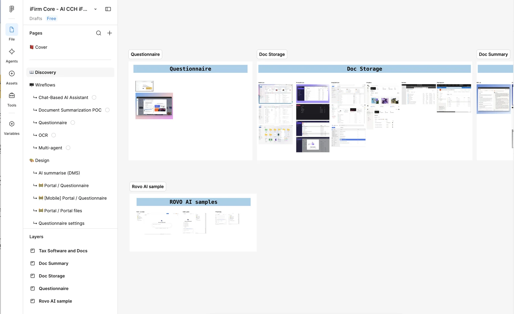
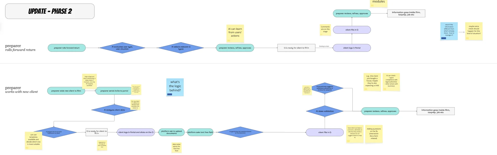
J’ai principalement contribué à la conception du questionnaire builder, à une partie des interactions liées à l’IA dans ce workflow, ainsi qu’à l’expérience d’import des informations dans la déclaration fiscale.
Défis
Comment permettre aux préparateurs d’utiliser l’IA pour accélérer leur travail, tout en conservant la transparence, la confiance et le contrôle nécessaires pour valider des informations critiques?
Concevoir une nouvelle expérience dans un écosystème existant
Respecter les patterns et contraintes des produits existants, rester cohérent avec l’écosystème actuel et introduire des capacités d’IA sans rupture dans les habitudes des utilisateurs.
Favoriser l’adoption d’un nouveau processus de travail
Les préparateurs sont des experts aux méthodes établies. Il fallait améliorer leur processus plutôt que le remplacer, rendre visibles les actions de l’IA et préserver leur sentiment de contrôle.
Simplifier un processus complexe
Les règles fiscales et les profils clients rendent la collecte difficile à standardiser. L’outil devait être assez flexible pour couvrir plusieurs scénarios, tout en restant simple à utiliser.
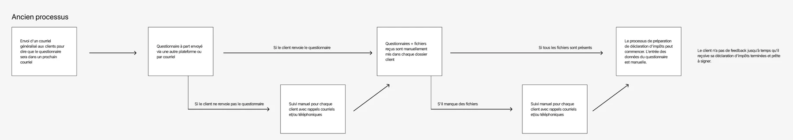
Ma contribution
1. Questionnaire builder
J’ai conçu l’expérience qui permet aux préparateurs de créer des questionnaires personnalisés selon la situation de chaque client.
- Création de questionnaires avec un form builder et ajout de questions par section.
- Logiques conditionnelles pour n’afficher que les questions pertinentes. Un client retraité de 75 ans ne reçoit pas les mêmes questions qu’un autre profil.
- Paramètres personnalisables selon les profils clients.
- Association des réponses aux champs correspondants des formulaires fiscaux.
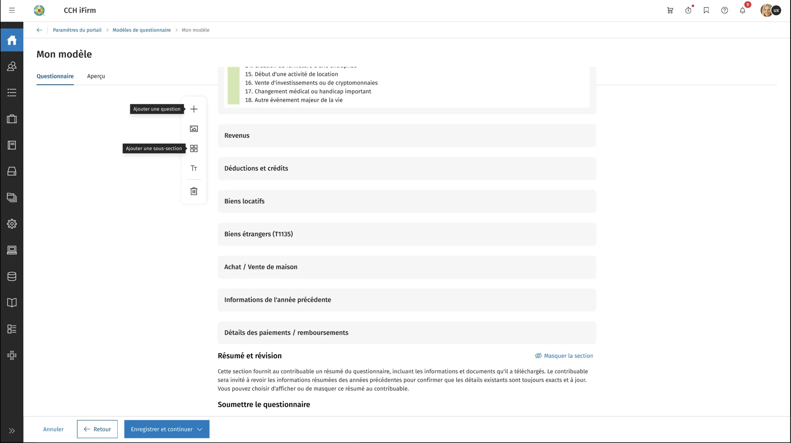
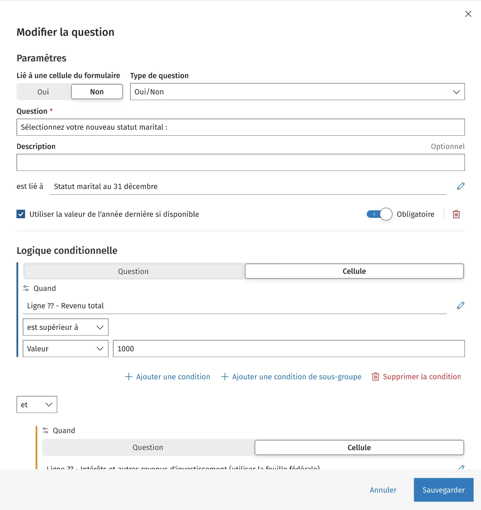
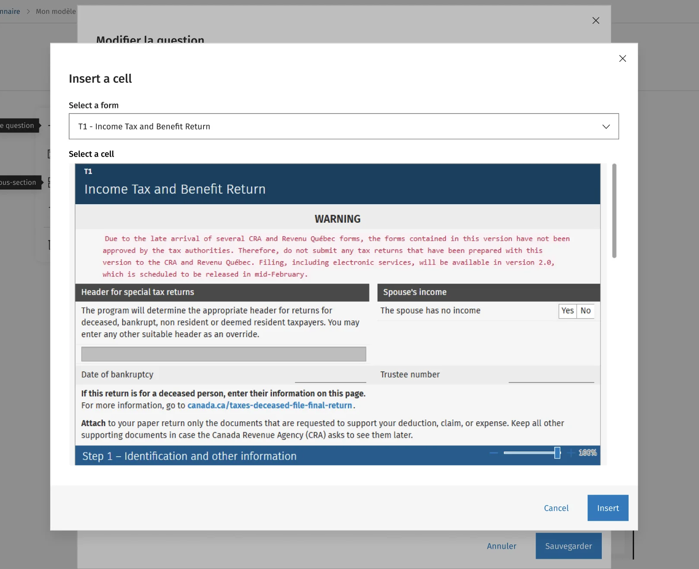
2. L’IA dans le questionnaire
J’ai contribué aux interactions entre le questionnaire et l’IA, qui identifie les informations pertinentes dans les documents clients, complète certaines parties du questionnaire et assiste la collecte de données. Une attention particulière a été portée à la compréhension des suggestions, à la possibilité de vérifier et corriger, et au maintien du contrôle humain sur les décisions finales.
3. Import dans la déclaration fiscale
J’ai conçu l’expérience qui permet de récupérer les informations du questionnaire et de les intégrer à la déclaration : visualiser les données disponibles, choisir quoi importer, vérifier les valeurs proposées et les modifier avant l’intégration finale.
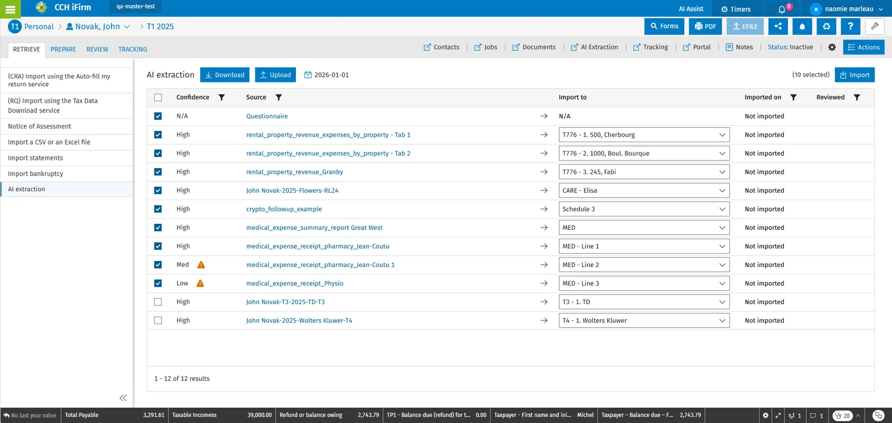
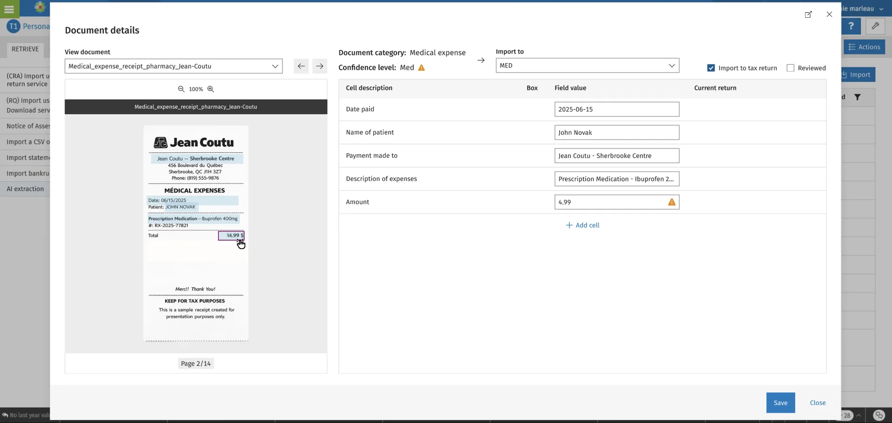
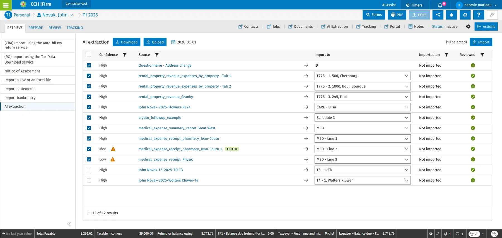
Solution globale
- Créer un questionnaire personnalisé selon le profil du client.
- L’envoyer à plusieurs clients simultanément.
- Laisser les clients répondre dans leur portail personnalisé.
- Collecter automatiquement les documents nécessaires.
- Utiliser l’IA pour analyser, classifier et extraire les informations pertinentes.
- Réviser et importer les informations directement dans la déclaration.
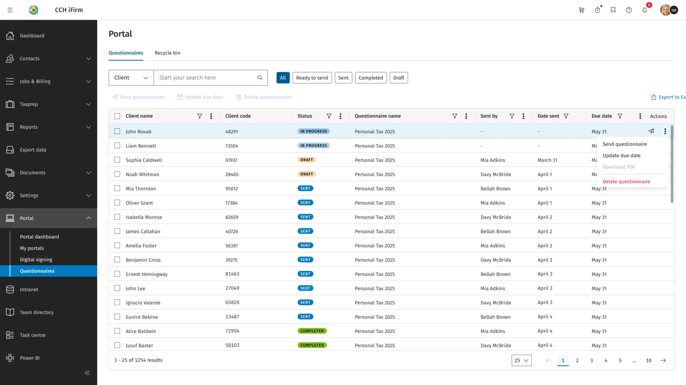
Approche UX
- Analyse des besoins utilisateurs et des processus existants.
- Collaboration étroite avec les experts métier et les équipes produit.
- Parcours utilisateurs et scénarios complexes.
- Wireframes, maquettes haute fidélité et prototypes interactifs.
- Validation des concepts avec les parties prenantes et itérations selon les contraintes techniques.
Le design system existant de l’entreprise a servi de fondation, pour assurer la cohérence visuelle et faciliter l’implémentation.
Impact
- Moins de tâches manuelles répétitives.
- Collecte d’informations plus rapide, données mieux structurées.
- Plus de temps pour les tâches à valeur ajoutée.
- Une approche assistée par l’IA qui maintient la confiance des utilisateurs.
Réflexion personnelle
Ce projet m’a permis d’explorer des expériences où l’IA agit comme un assistant plutôt qu’un remplacement de l’utilisateur. La principale question UX était de trouver le bon équilibre entre automatisation et contrôle humain : accélérer le processus tout en donnant aux professionnels la visibilité et la capacité de décision dont ils ont besoin.